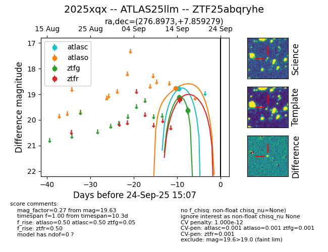
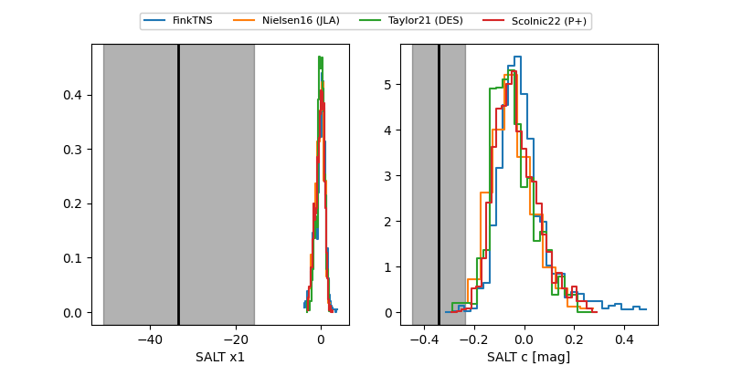

FINK: ZTF25abqryhe
Lasair: ZTF25abqryhe
ALeRCE: ZTF25abqryhe
TNS: 2025xqx
YSE: 2025xqx
ZTF25abqryhe (ztf,fink)
2025xqx (tns,yse)
ATLAS25llm (atlas)
equatorial (ra, dec) = (276.8973,+7.85928)
galactic (l, b) = (37.2723,+8.85459)


last atlasc=18.79, atlaso=18.77, ztfg=19.63, ztfr=19.20
1 atlasc, 1 atlaso, 2 ztfg, 1 ztfr detections